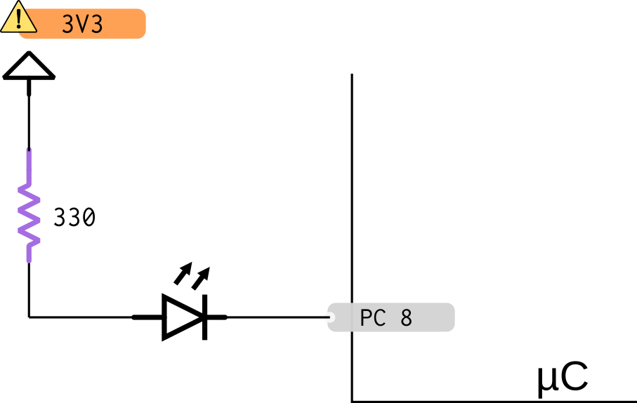
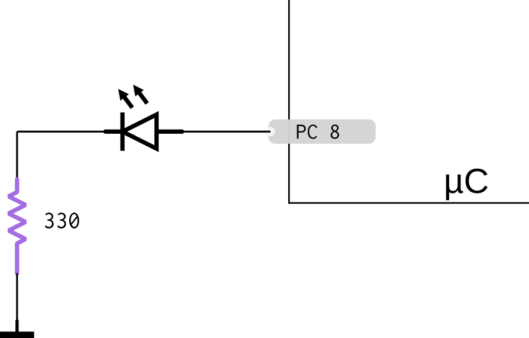

Digital Output¶
Digital output is the most simple way to control the external world. This signal can assume only two states: On/OFF, 1/0, High/ Low.
most common uses
- LED
- DC Motor
- Buzzer
- ...
The peripheral that allows us to read a digital value is common named:
 Parallel I/O - PIO
Parallel I/O - PIO- General-Purpose I/O - GPIO
Peripheral
Read more about this peripheral on Peripheral-PIO.
Hardware¶
This examples shows how to control a LED, but can be apply to others digital components.
This example shows on how to control a LED with a microcontroller, the series resistor limits the electric current.

 Best solution (reduces the risk of burning as normally input accept electric current is higher than output current)
Best solution (reduces the risk of burning as normally input accept electric current is higher than output current)
- Connect LED to resistor to VCC
Write 0 to pin light up LED, 1 turn off.

Warning
- You must respect the VCC of your system.
- You must check the resistor value to your system.
Firmware¶
Steps to simple control a PIO pin:
- Enable system clock/ board configs.
- Enable the peripheral
- Configure the Pin as output
- Control pin (High/ Low)
Example Code¶
Example for SAME70 blink an LED with drive in connection on pin `PC8``.
#define LED_PIO PIOC
#define LED_PIO_ID ID_PIOC
#define LED_IDX 8
#define LED_IDX_MASK (1 << LED_IDX)
#define LED_CONFIG PIO_DEFAULT
int main (void){
sysclk_init();
// initialize digital pin LED_IDX as an output.
pmc_enable_periph_clk(LED_PIO_ID);
pio_configure(LED_PIO, PIO_OUTPUT_0, LED_IDX_MASK, PIO_DEFAULT);
while (1){
// drive pin low - turns led on
pio_clear(LED_PIO, LED_IDX_MASK);
delay_ms(100);
// drive pin high - turns led off
pio_set(LED_PIO, LED_IDX_MASK);
delay_ms(100);
}
// pushbutton connected to digital pin 7
int LED_PIN = 5;
void setup() {
// initialize digital pin LED_PIN as an output.
pinMode(LED_PIN, OUTPUT);
}
void loop() {
// drive pin low - turns led on
digitalWrite(LED_PIN, LOW);
delay(100);
// drive pin high - turns led off
digitalWrite(LED_PIN, HIGH);
delay(100);
}